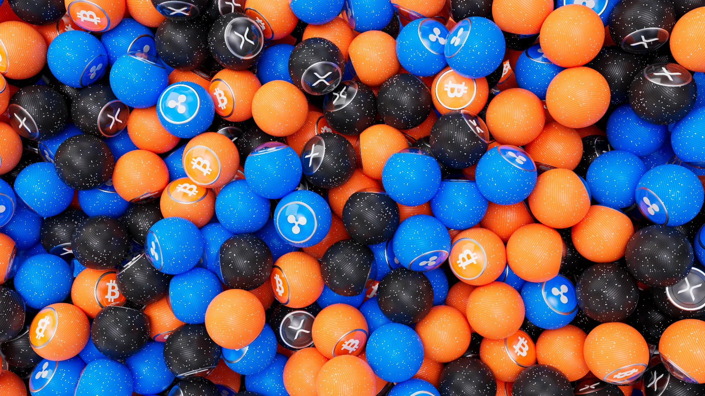
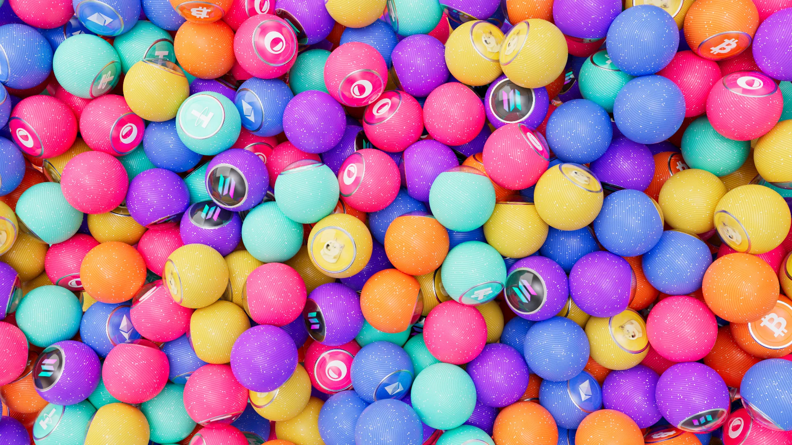
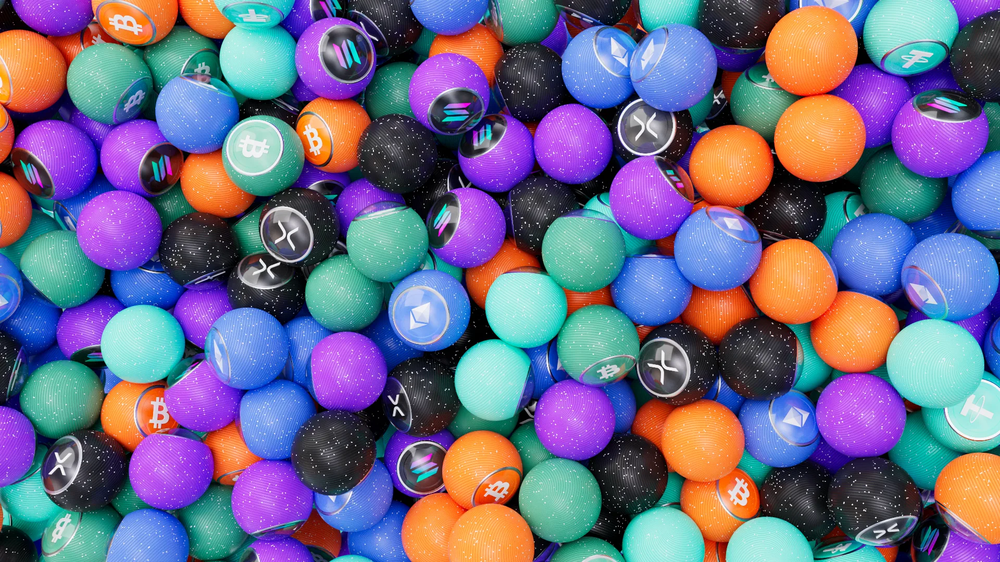

Fabric Labs — Polyester
Fabric Labs —
Polyester.
A set of 3D animations for Fabric Labs, a crypto and fintech brand — motion built for product and web, in dark and light versions.
The material does the talking. Polished surfaces, coin forms and interface states — a trailer, an error page, a switch, a loading moment — each treated as a short, self-contained piece of motion. The goal was a consistent visual system that holds up on a web page and still looks deliberate in full frame.


